Dynamics at a glance
Compressors, limiters, levellers, a de-esser and a gate - from transparent to coloured. Click a plug-in for its panel; each one has its manual PDF and a download.
| Plug-in | In the spirit of | Main features | Best for |
|---|---|---|---|
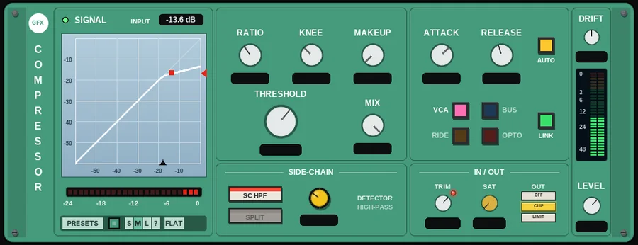 CompressorPanel | The classic studio types in one box |
| An all-rounder for any track |
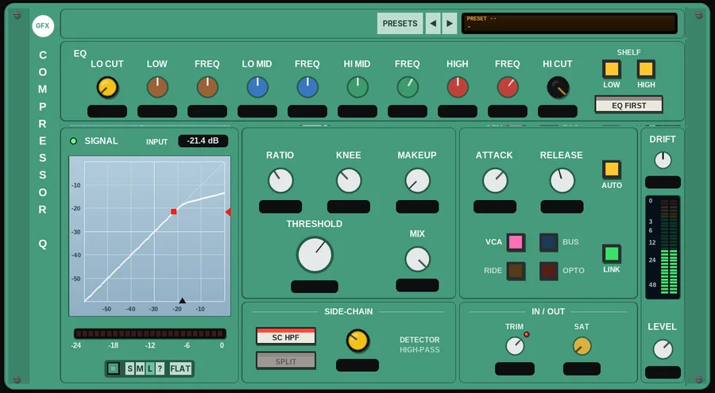 Compressor QPanel | The classic studio types with a channel EQ |
| A one-stop channel compressor |
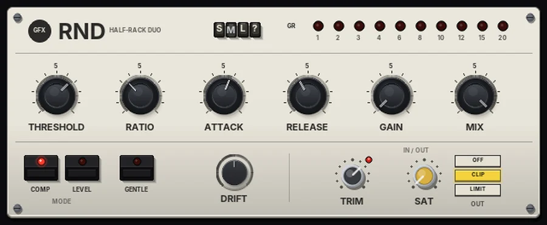 RNDPanel | The classic half-rack compressor pair |
| Transparent control and smooth levelling |
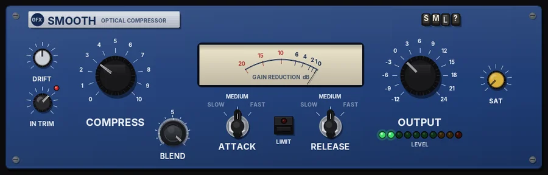 SmoothPanel | Classic one-knob software compressors |
| Fast, musical compression |
 HeadsmootherPanel HeadsmootherPanel | Tape saturator and optical compressor stacked |
| Tape and compression in one go |
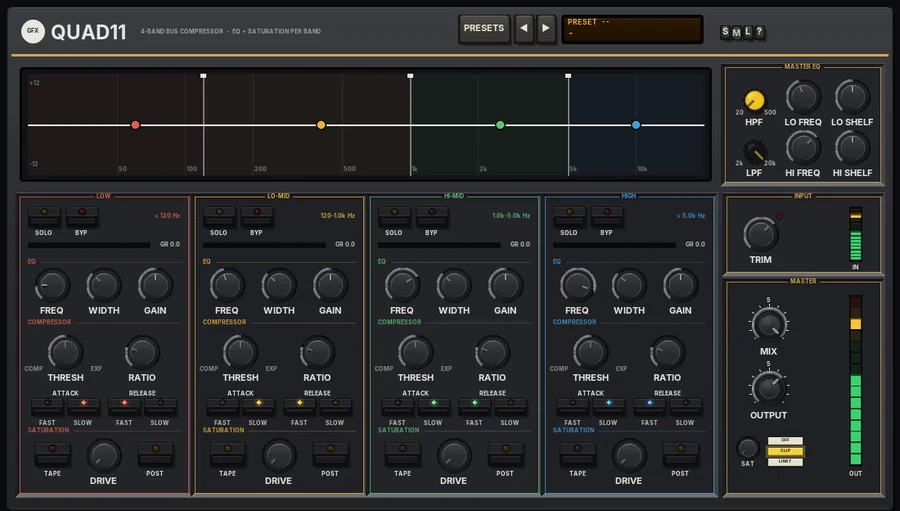 Quad11Panel | Multiband bus compressors |
| Bus control band by band |
 TandemPanel TandemPanel | Two 80s RMS soft-knee compressors in series |
| Heavy compression that stays open |
 Tandem QPanel Tandem QPanel | RMS compressors with a passive program EQ |
| Vocals and buses that need both |
 DuplexPanel DuplexPanel | 80s British two-channel dynamics processors |
| Vocals, de-essing and broadcast control |
 Duplex QPanel Duplex QPanel | British two-channel dynamics with a tilt EQ |
| Broadcast voice and bus shaping |
 ThrustPanel ThrustPanel | The famous American stereo bus compressor |
| Mix and drum bus glue with punch |
 ConsolePanel ConsolePanel | 80s British broadcast console dynamics |
| Clean channel and bus dynamics, gating |
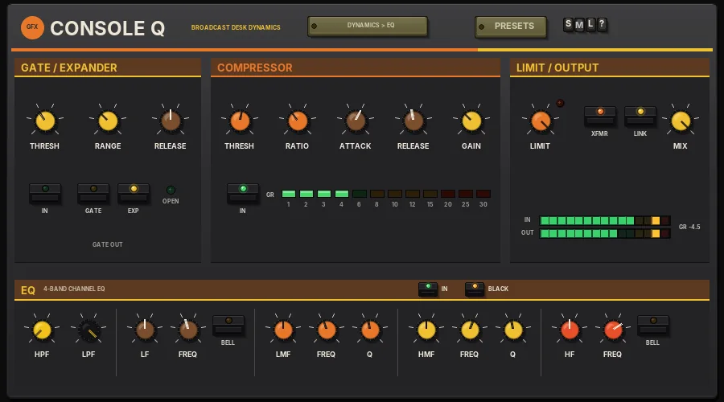 Console QPanel | 80s broadcast console dynamics with channel EQ |
| A complete console channel strip |
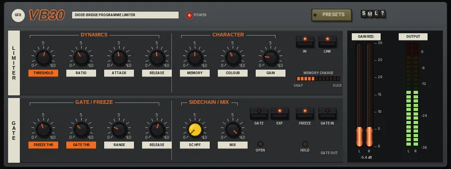 VB30Panel | Early broadcast modules and high-ratio limiters |
| Room mics, aggressive vocals, parallel drums |
 De-EssPanel De-EssPanel | Classic split-band de-essers |
| Taming sibilance |
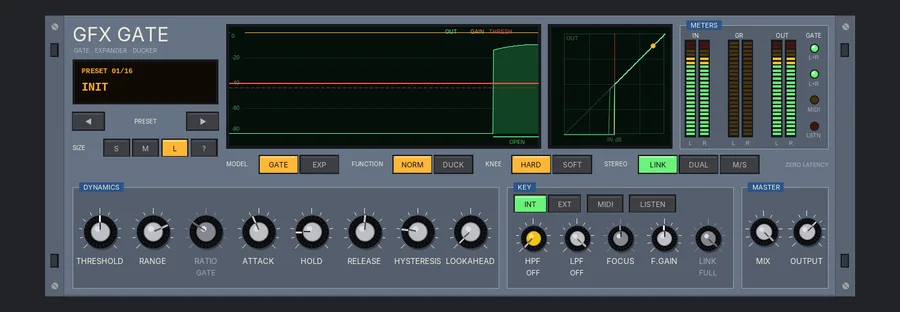 GatePanel | Analogue studio gates |
| Drums, noise control and ducking |
 MK3Panel MK3Panel | 1970s local-radio broadcast desks |
| Vocals and speech |
 Strip 102Panel Strip 102Panel | Small compact-mixer channels |
| Quick, simple channel control on any track |
 Field 42Panel Field 42Panel | Battery-powered location mixers |
| Dialogue, location sound, safe gain staging |
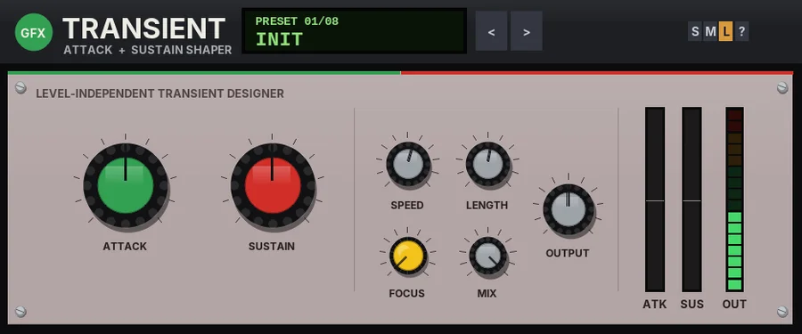 TransientPanel | Classic transient designers |
| Drums and plucks |
 Twin CompPanel Twin CompPanel | The classic 70s RMS VCA and 80s expressor |
| Vocals, bass and drums |
 SquishPanel SquishPanel | Classic OTA and boutique pedal compressors |
| Guitar, bass and acoustic |
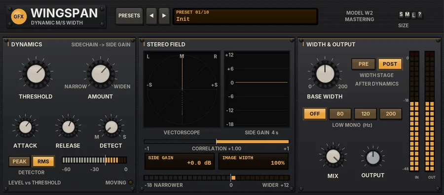 WingspanPanel | Dynamic stereo wideners |
| Mastering and mix-bus width |
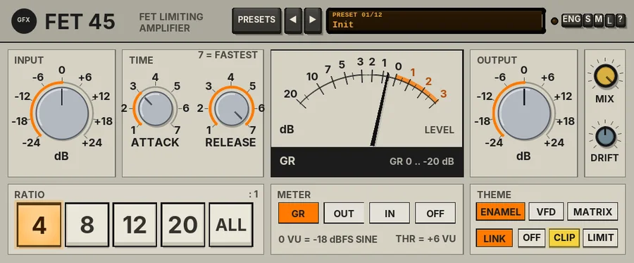 Fet 45Panel | The classic fast FET limiters |
| Vocals, drums, room smash |
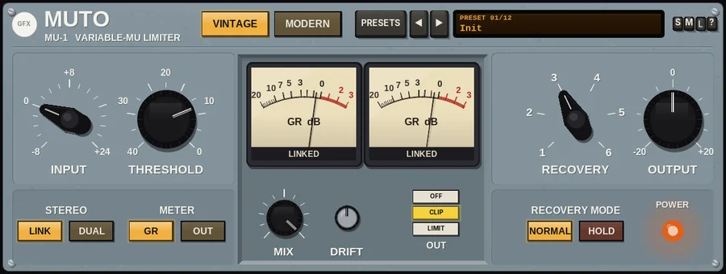 MUTOPanel | 60s studio vari-mus and modern boutique valve units |
| Vocals, drum and mix bus glue |